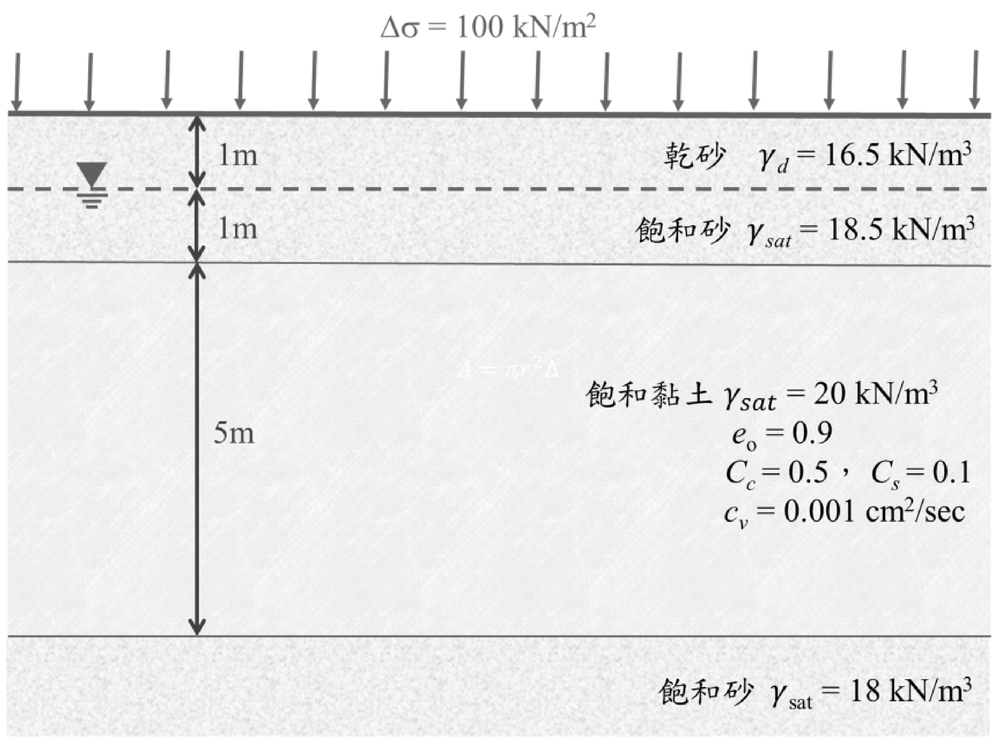
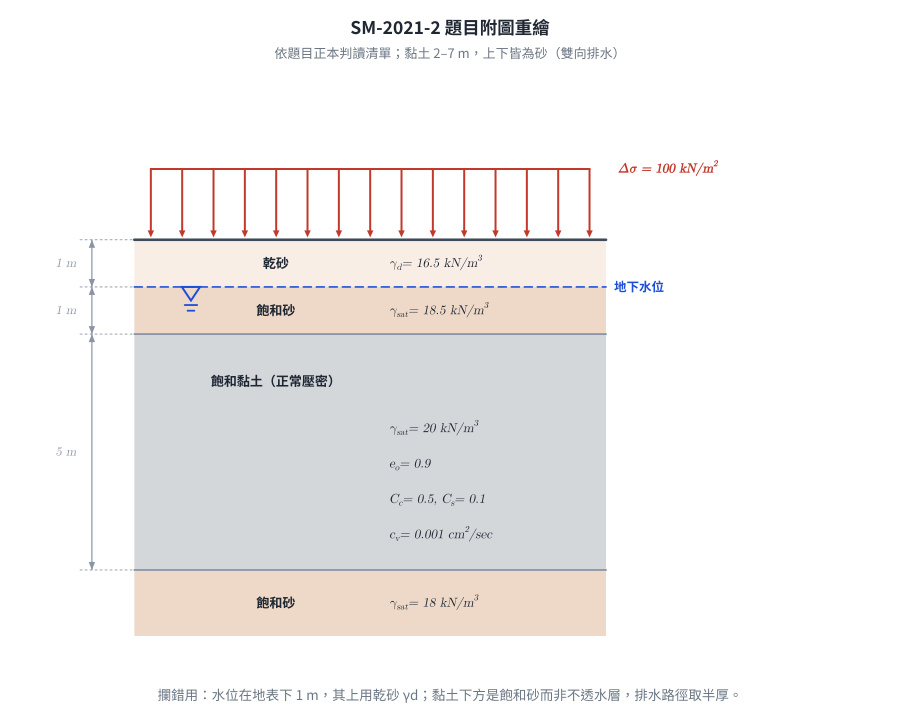
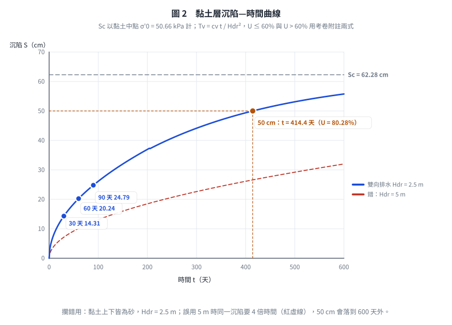

📄 題目正本：考卷原文・附圖・判讀清單（已確認）
SM-2021-2 題目正本
本檔只記錄考卷上寫了什麼、圖上畫了什麼，不含任何解法。解析見同資料夾
SM-2021-2.md。
判讀清單已確認（凍結）；本檔原則上不再修改（改動須回考卷原圖並記 log）。
| 項目 | 內容 |
|---|---|
| 考卷 | raw/exams/SM-2021_土壤力學與基礎設計.pdf 第 2 頁，第二題 |
| 考年 | 民國 110 年（2021） |
| 配分 | 25 分 |
| 附圖 | SM-2021-2-fig-2.png（土壤剖面；2026-11-15 由考卷重新擷取 500 dpi）；既有 SM-2021-2-fig-1.png 為同一圖，黏土層內有滑鼠游標，保留不刪 |
| 判讀狀態 | 已確認（2026-11-15 關卡一：使用者授權依建議判讀確認；轉錄 2026-11-15；PyMuPDF 110 dpi 全頁目視，附圖 300 dpi、局部 600 dpi；文字層核對；盲讀後才比對既有解析） |
1. 考卷原文（逐字）
二、有一土壤剖面如下圖所示，由距離地表面 2 m 深度開始，有一厚度為 5 m 之黏土層，此黏土層為正常壓密黏土。現於地表面施加均勻分布的應力 100 kN/m²，請計算：（25 分）
㈠黏土層之主要壓密沉陷量；
㈡施加應力 1 個月後、2 個月後、3 個月後所得到之壓密沉陷量分別為何？
㈢施加應力多少天後可以得到 50 cm 的壓密沉陷量？
註：
For U = 0 to 60%，$T_v=\dfrac{\pi}{4}\left(\dfrac{U\%}{100}\right)^2$
For U > 60%，$T_v=1.781-0.933\cdot\log(100-U\%)$
2. 考卷給的公式、附表與參數
- 公式（照錄於 §1 註；與 Terzaghi 近似式相同，無筆誤）。
- 圖上參數：$\Delta\sigma$ = 100 kN/m²（地表均布）；乾砂 $\gamma_d$ = 16.5 kN/m³（0～1 m）；飽和砂 $\gamma_{sat}$ = 18.5 kN/m³（1～2 m）；飽和黏土 $\gamma_{sat}$ = 20 kN/m³、$e_o$ = 0.9、$C_c$ = 0.5、$C_s$ = 0.1、$c_v$ = 0.001 cm²/sec（2～7 m）；其下飽和砂 $\gamma_{sat}$ = 18 kN/m³。
- 沒有給：$\gamma_w$、一個月的天數、黏土預壓密應力（題文已說正常壓密）。
- 卷首注意事項：㈠可以使用電子計算器。㈡不必抄題，作答時請將試題題號及答案依照順序寫在試卷上，於本試題上作答者，不予計分。㈢本科目除專門名詞或數理公式外，應使用本國文字作答。
3. 附圖

圖面文字照錄：Δσ = 100 kN/m²、1m、乾砂 γd = 16.5 kN/m³、1m、飽和砂 γsat = 18.5 kN/m³、5m、飽和黏土 γsat = 20 kN/m³、eo = 0.9、Cc = 0.5， Cs = 0.1、cv = 0.001 cm²/sec、飽和砂 γsat = 18 kN/m³。（黏土層中央另有一行極淡的殘留字「A = πr²Δ」，600 dpi 才看得出，與本題無關。）
4. 判讀清單
| # | 項目 | 判讀 | 圖上／題文依據 | 把握 |
|---|---|---|---|---|
| 1 | 一個月的天數 | 考卷未定；以 30 天計 | — | 不確定（解讀；影響答案數值，使用者授權依建議定案：建議 30 天） |
| 2 | 地層 | 乾砂 0～1 m、飽和砂 1～2 m、飽和黏土 2～7 m、其下飽和砂 | 圖左側三條尺寸線，端點對齊各層界線；題文「由距離地表面 2 m 深度開始…厚度為 5 m」 | 確定 |
| 3 | 地下水位 | 地表下 1 m（虛線與 ▽ 在第一條 1 m 尺寸線下端） | 圖 300 dpi | 確定 |
| 4 | 排水 | 黏土上下皆為砂 → 雙向排水，$H_{dr}$ = 2.5 m | 圖上黏土下方為飽和砂 | 確定 |
| 5 | 荷重 | 地表均布 100 kN/m²，大面積一維，黏土各深度 $\Delta\sigma$ = 100 | 題文、圖上箭頭布滿地表 | 確定 |
| 6 | 壓密狀態 | 正常壓密 → 只用 $C_c$；$C_s$ = 0.1 為多給的參數 | 題文 | 確定（解讀） |
| 7 | 沉陷計算 | 以黏土層中點（地表下 4.5 m）單層計算 | 考題慣例 | 確定（解讀） |
| 8 | 所求㈢ | 達到 50 cm 沉陷所需天數 | 題文 | 確定 |
| 9 | 考卷沒有給 | $\gamma_w$（取 9.81）、一個月的天數 | 全題 | 確定 |
轉錄：2026-11-15（SM-U1-3 題目正本推廣・批 2）
確認：2026-11-15 使用者授權依建議判讀確認（SM-U1-3 題目正本推廣・批 2，關卡一；使用者指示「要確認的依你建議」）
考題編號：SM-2021-2
主分類： SM-U1-3 土壤夯實及壓密
副分類： 無
分析法： 有效應力法
標籤： Terzaghi壓密理論 正常壓密 壓密沉陷 壓密係數Cv 時間因數 雙面排水
1. 題目（考卷原文見題目正本）
考卷原文、公式／附表、附圖與判讀清單（已確認）見
SM-2021-2-problem.md。本節只列解題時最容易讀錯的地方與本解使用的記號；題意以題目正本為準。

重繪自考卷附圖，依題目正本判讀清單 #2–#5；攔下的判讀錯誤：水位在地表下 1 m、黏土下方為飽和砂（雙向排水 $H_{dr}$ = 2.5 m）。
常見誤讀
| 項目 | 正確判讀 | 常見誤讀 |
|---|---|---|
| 排水 | 黏土上下皆為砂 → 雙向排水 $H_{dr}$ = 2.5 m（題目正本 #4） | 單向排水 $H_{dr}$ = 5 m |
| 壓密狀態 | 正常壓密只用 $C_c$；$C_s$ = 0.1 是多給的（#6） | 誤用 $C_s$ |
| 一個月 | 以 30 天計（#1，已確認） | 以 31 天或 1/12 年計而未說明 |
| $T_v$ 公式 | 考卷附註已給 $U\le60\%$ 拋物線式與 $U>60\%$ 對數式（題目正本 §1） | 不知道考卷已給公式（舊 §1 漏抄此註） |
本解記號： $\sigma'_{v0}$ 黏土中點（地表下 4.5 m）初始有效應力；$S_c$ 主要壓密沉陷量；$U$ 平均壓密度；$T_v$ 時間因數；$H_{dr}$ 排水路徑長；$\gamma_w$ = 9.81 kN/m³。
2. 考題核心精神與出題者意圖 (Core Concepts & Examiner's Intent)
本題核心測驗 Terzaghi 一維壓密理論（1-D Consolidation Theory）的完整應用。出題者的意圖在於評估考生是否具備以下能力：
- 依據地層剖面正確計算中央深度的初始有效覆土應力 $\sigma_{v0}'$。
- 針對「正常壓密黏土」正確選用對應之主要壓密沉陷量公式。
- 判別雙面排水條件以正確決定排水路徑長度 $H_{dr}$。
- 熟練轉換壓密度 $U$、時間因數 $T_v$ 與真實時間 $t$ 之間的數學關係，並能於 $U \le 60\%$ 及 $U > 60\%$ 兩種情境下運用不同的近似經驗公式。
3. 解題戰略地圖與陷阱分析 (Strategic Roadmap & Trap Analysis)
- Step 1：計算初始有效應力。取黏土層中央深度計算初始有效應力 $\sigma_{v0}'$。
- Step 2：計算最終主要壓密沉陷量。代入正常壓密（NC）黏土的壓密沉陷公式。
- Step 3：計算指定時間之沉陷量。確認為雙面排水，計算 1、2、3 個月對應的 $T_v$，藉此求出壓密度 $U$ 並推算目前的沉陷量。
- Step 4：計算達特定沉陷量之時間。由給定之 50 cm 反求壓密度 $U$，再套用對應的 $T_v$ 公式，最終轉為所需天數。
陷阱分析：
- 排水路徑判斷（Drainage Path）：黏土層上方與下方均為砂土（高透水層），因此屬於「雙面排水」。排水路徑 $H_{dr}$ 必須取為厚度的一半（$2.5 \text{ m}$）。若誤以 $5 \text{ m}$ 帶入，會導致時間估算有 4 倍之巨大誤差。
- 單位一致性：題目給的壓密係數 $c_v$ 單位為 $\text{cm}^2/\text{sec}$，沉陷量單位也常以 $\text{cm}$ 表達；計算時間因素時，所有長度均須化為 $\text{cm}$，求出之時間單位為 $\text{sec}$，需再轉換為月或天。
- 水單位重的選用：計算 $\sigma_{v0}'$ 時需使用水單位重 $\gamma_w$。若未特殊規定，慣例取 $9.81 \text{ kN/m}^3$（此為標準作法），部分考生亦會採用 $10 \text{ kN/m}^3$ 簡化運算，實務上皆為閱卷所接受，本解析採用 $9.81 \text{ kN/m}^3$。
3.5 變數層次分析 (Variable Hierarchy Analysis)
最終目標
求出該黏土層之最終壓密沉陷量、歷經特定時間後的沉陷量，以及達到目標沉陷量所需的天數。
本題關鍵公式（依計算順序）
- 有效覆土應力：$\sigma_{v0}' = \sum (\gamma \cdot H) - \gamma_w z_w$
- 最終壓密沉陷量：$S_c = \frac{C_c H_c}{1+e_0} \log \left( \frac{\boxed{\sigma_{v0}'} + \Delta\sigma}{\boxed{\sigma_{v0}'}} \right)$
- 時間因數：$T_v = \frac{c_v t}{H_{dr}^2}$
- 壓密度（$U \le 60\%$）：$U = \sqrt{\frac{4 \boxed{T_v}}{\pi}}$
- 壓密度（$U > 60\%$）：$\boxed{T_v} = 1.781 - 0.933 \log(100 - U\%)$
- 特定時間之沉陷量：$S_t = \boxed{U} \cdot \boxed{S_c}$
L1：題目直接給定
| 符號 | 數值 | 說明 |
|---|---|---|
| $H_c$ | $5 \text{ m} = 500 \text{ cm}$ | 黏土層總厚度 |
| $H_{dr}$ | $2.5 \text{ m} = 250 \text{ cm}$ | 排水路徑（雙面排水，取厚度一半） |
| $\Delta\sigma$ | $100 \text{ kN/m}^2$ | 地表新增均布載重 |
| $e_0$ | $0.9$ | 黏土初始孔隙比 |
| $C_c$ | $0.5$ | 壓縮指數 |
| $c_v$ | $0.001 \text{ cm}^2/\text{sec}$ | 壓密係數 |
L2：需知識點推導
應力與最終沉陷量計算
| 符號 | 公式／來源 | 卡關? |
|---|---|---|
| $\sigma_{v0}'$ | $\sum \gamma H - u$ | |
| $S_c$ | $\frac{C_c H_c}{1+e_0} \log \left( \frac{\sigma_{v0}' + \Delta\sigma}{\sigma_{v0}'} \right)$ | |
時間與壓密度計算
| 符號 | 公式／來源 | 卡關? |
|---|---|---|
| $T_v$ | $\frac{c_v t}{H_{dr}^2}$ | |
| $U$ | $U \le 60\%$ 用 $\sqrt{4 T_v / \pi}$；$U > 60\%$ 用公式反推 | |
| $S_t$ | $U \times S_c$ | |
L3：深層知識（不懂就卡住）
| 知識點 | 說明 | 卡關? |
|---|---|---|
| 雙面排水路徑 | 黏土層上下若均為透水層（如砂土），$H_{dr} = H/2$ | |
| 單位統一 | $c_v$ 為 $\text{cm}^2/\text{sec}$，長度須代入 cm，時間基礎單位為 sec | |
| 時間因數分段公式 | 以 $U=60\%$ 作為 $T_v$ 對應公式的分界點 |
4. 步驟化詳細計算過程 (Step-by-Step Detailed Calculation)
Step 1：計算黏土層中央之初始有效應力
取黏土層中央（深度 $z = 1 + 1 + 2.5 = 4.5 \text{ m}$）計算代表應力。
假設水單位重取 $\gamma_w = 9.81 \text{ kN/m}^3$。
-
總應力 $\sigma_{v0}$：
$$\sigma_{v0} = \gamma_d \times 1 + \gamma_{sat,砂} \times 1 + \gamma_{sat,黏} \times 2.5$$
$$\sigma_{v0} = 16.5 \times 1 + 18.5 \times 1 + 20 \times 2.5 = 16.5 + 18.5 + 50 = 85 \text{ kN/m}^2$$ -
孔隙水壓 $u$（水位位於深度 1 m 處）：
$$u = \gamma_w \times (4.5 - 1) = 9.81 \times 3.5 = 34.335 \text{ kN/m}^2$$ -
初始有效應力 $\sigma_{v0}'$：
$$\sigma_{v0}' = \sigma_{v0} - u = 85 - 34.335 = 50.665 \text{ kN/m}^2$$策略註解：若採用 $\gamma_w = 10 \text{ kN/m}^3$，求得 $\sigma_{v0}' = 50 \text{ kN/m}^2$，也是考試可接受之常態作法，此處維持 $9.81$ 以求嚴謹。
Step 2：計算黏土層之主要壓密沉陷量 (一)
該層為正常壓密黏土（Normally Consolidated），代入公式：
$$S_c = \frac{C_c H_c}{1+e_0} \log \left( \frac{\sigma_{v0}' + \Delta\sigma}{\sigma_{v0}'} \right)$$
$$S_c = \frac{0.5 \times 500}{1 + 0.9} \log \left( \frac{50.665 + 100}{50.665} \right) = \frac{250}{1.9} \log(2.9737)$$
$$S_c = 131.579 \times 0.4733 \approx 62.28 \text{ cm}$$
$$\boxed{S_c = 62.28 \text{ cm}}$$
Step 3：計算 1, 2, 3 個月後之壓密沉陷量 (二)
黏土層上下皆為砂層，屬雙面排水，排水路徑 $H_{dr} = \frac{500}{2} = 250 \text{ cm}$。
（假設 1 個月為 30 天計）
1 個月後：
時間 $t_1 = 30 \times 24 \times 3600 = 2,592,000 \text{ sec}$
時間因數 $T_{v1} = \frac{c_v t_1}{H_{dr}^2} = \frac{0.001 \times 2,592,000}{250^2} = 0.04147$
因 $T_{v1} < 0.286$（即 $U \le 60\%$），適用拋物線公式：
$$U_1 = \sqrt{\frac{4 T_{v1}}{\pi}} = \sqrt{\frac{4 \times 0.04147}{3.1416}} = \sqrt{0.0528} \approx 0.2298 \; (22.98\%)$$
沉陷量 $S_1 = U_1 \times S_c = 0.2298 \times 62.28 \approx 14.31 \text{ cm}$
2 個月後：
時間 $t_2 = 60 \times 24 \times 3600 = 5,184,000 \text{ sec}$
時間因數 $T_{v2} = \frac{0.001 \times 5,184,000}{250^2} = 0.08294$
$$U_2 = \sqrt{\frac{4 \times 0.08294}{\pi}} = \sqrt{0.1056} \approx 0.3250 \; (32.50\%)$$
沉陷量 $S_2 = U_2 \times S_c = 0.3250 \times 62.28 \approx 20.24 \text{ cm}$
3 個月後：
時間 $t_3 = 90 \times 24 \times 3600 = 7,776,000 \text{ sec}$
時間因數 $T_{v3} = \frac{0.001 \times 7,776,000}{250^2} = 0.1244$
$$U_3 = \sqrt{\frac{4 \times 0.1244}{\pi}} = \sqrt{0.1584} \approx 0.3980 \; (39.80\%)$$
沉陷量 $S_3 = U_3 \times S_c = 0.3980 \times 62.28 \approx 24.79 \text{ cm}$
$$\boxed{\text{1個月後：} 14.31 \text{ cm}；\text{2個月後：} 20.24 \text{ cm}；\text{3個月後：} 24.79 \text{ cm}}$$
Step 4：計算得到 50 cm 沉陷量所需時間 (三)
目標沉陷量對應的壓密度：
$$U = \frac{S_t}{S_c} = \frac{50}{62.28} \approx 0.8028 = 80.28\%$$
因 $U > 60\%$，適用對數公式：
$$T_v = 1.781 - 0.933 \log(100 - U\%)$$
$$T_v = 1.781 - 0.933 \log(100 - 80.28) = 1.781 - 0.933 \log(19.72)$$
$$T_v = 1.781 - 0.933 \times 1.2949 = 1.781 - 1.2081 = 0.5729$$
求時間 $t$：
$$t = \frac{T_v \cdot H_{dr}^2}{c_v} = \frac{0.5729 \times 250^2}{0.001} = 35,806,250 \text{ sec}$$
換算為天數：
$$t_{\text{days}} = \frac{35,806,250}{24 \times 3600} \approx 414.4 \text{ 天}$$
$$\boxed{\text{施加應力約 } 414.4 \text{ 天後可得到 50 cm 之壓密沉陷量}}$$

圖 2 雙向排水 $H_{dr}$ = 2.5 m 的沉陷—時間曲線。攔下誤取 $H_{dr}$ = 5 m：同一沉陷需 4 倍時間，50 cm 會落在 600 天之外。
5. 關鍵爭議點與進階探討 (Critical Issues & Advanced Discussion)
- 水單位重 $\gamma_w$ 的選取：此類題目若未明定 $\gamma_w = 10 \text{ kN/m}^3$，最標準作法為使用 $9.81 \text{ kN/m}^3$。若讀者習慣以 $10 \text{ kN/m}^3$ 求解，可得 $\sigma_{v0}' = 50 \text{ kN/m}^2$，$S_c = 62.78 \text{ cm}$，最終天數則約為 405 天，兩者皆屬於合理誤差，可獲滿分。
- 一個月的天數假設：在工程與考試計算中，若無特別指定日期區間，通常預設 1 個月等同於 30 天，建議在考卷上寫出「假設一個月為 30 天計」以防爭議。
- 時間因數公式的選用：雖然也有圖表法或完整級數解，但因國考未必提供 $T_v-U$ 完整對照表，故考生必須熟記 $U \le 60\%$ 的拋物線公式及 $U > 60\%$ 的對數公式，兩者的分界點為 $U=0.6$ 或 $T_v=0.286$。
修正日期：2026-11-15（§1 改為指向題目正本 SM-2021-2-problem.md，重繪附圖 figs/SM-2021-2-fig-1-problem.svg；舊 §1 漏抄的考卷附註公式見題目正本；§4 補解題圖解 figs/SM-2021-2-fig-2-settlement-time.svg（腳本 gen_SM-2021-2.py）；非勘誤）